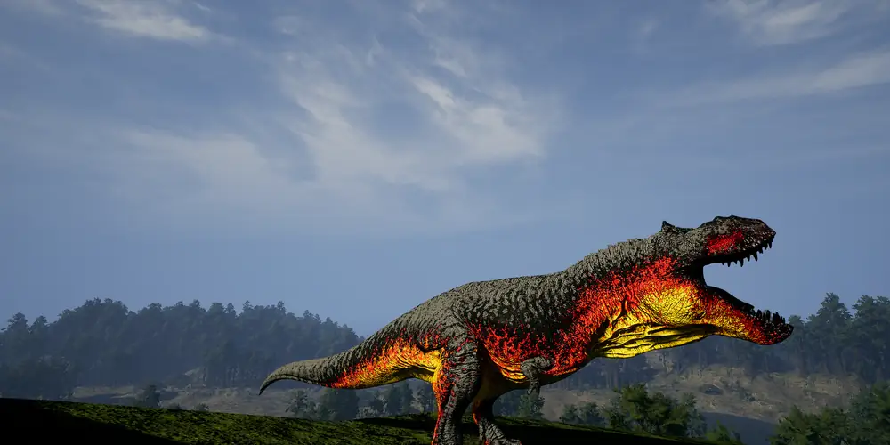

How to join the clan
Three steps, all inside our Discord. The server is in Spanish.
First steps
From zero to Recruit
Read the rules
They are in the #normas channel. Being on the server means you accept them, so read them first. You can also read them here on the website.
Fill in the application
In the #solicitudes channel, choose Solicitud de ingreso from the menu. The bot will ask you a few questions by direct message, so keep your DMs open.
Wait for review
The staff reviews your application. If accepted, you get the Recluta (Recruit) rank and the clan and voice channels open up.
 No mic? No problem: join a voice channel and type in its chat. The bot joins by itself and reads it aloud, naming the speaker first. Use
No mic? No problem: join a voice channel and type in its chat. The bot joins by itself and reads it aloud, naming the speaker first. Use /set nick to choose what it calls you.
FAQ
Frequently asked questions
Is GARRA IBÉRICA a server for The Isle?
No. We are a clan: a community of players who organise on Discord to play The Isle Evrima together on an unofficial server.
Do I need to speak Spanish?
Yes. The clan language is Spanish, so you need to understand it to play with the pack. You don't need perfect Spanish.
What is The Isle Evrima?
The Isle is a survival game for PC, on Steam, where you play as a carnivore or herbivore dinosaur. Evrima is its current version and Legacy the old one. The clan plays Evrima.
How do I join the clan?
Join our Discord, read the rules, fill in the application from the bot menu and wait for the staff to review it. If accepted, you start as a Recruit. The three steps are explained above.
Are you recruiting new players?
Yes, recruitment is open. We look for consistent players and good teammates; experience comes from playing with the pack.
Can I join from Latin America?
Yes. The clan started in Spain, but it is open to any Spanish-speaking player, wherever they play from.
Does it cost anything to join?
No. Joining the clan and the Discord is free. You only need to own The Isle on Steam.
Do I need a microphone?
No. You can type in the voice channel chat and a bot reads it out loud, naming the speaker first.
Can I play as both a carnivore and a herbivore?
Yes. The clan has players of both types, and we have a guide for each dinosaur with recommended mutations.
When is the clan hunt?
Every Saturday at 22:00 Spanish mainland time (21:00 in the UK), in the hunt voice channel. In Latin America it falls between 13:00 and 18:00, depending on the country and the time of year. Press “Interested” on the Discord event and Discord will remind you.
How do I rank up?
By playing. Time counts, but above all how you play and how you treat the pack. Promotions are decided by the staff, so don't ask for them. See the ranks summary.
I'm new to The Isle. Can I join?
Yes. The clan's veterans help and guide recruits, and you learn much faster in a group.
Ready to join the pack?
It all starts on the Discord.
Join GARRA IBÉRICA on Discord (opens in a new tab)